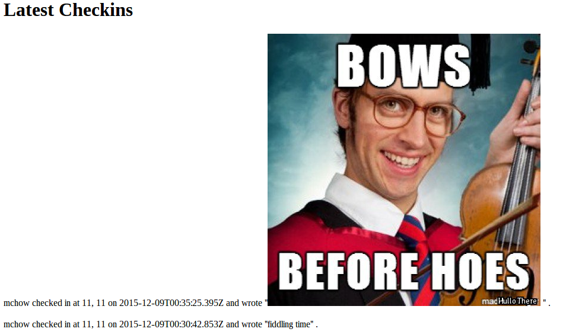
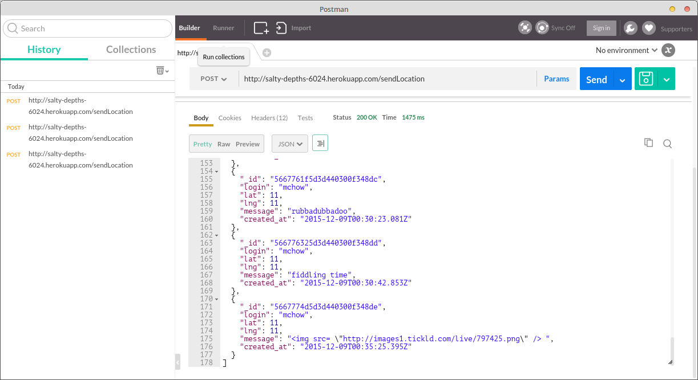
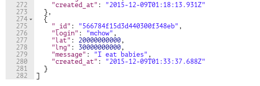
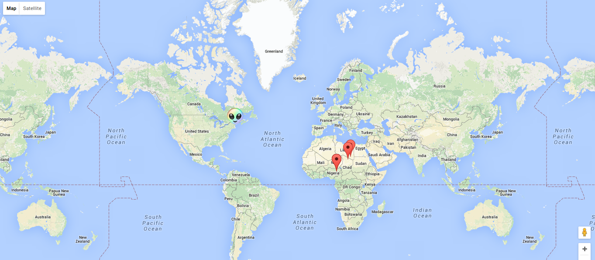

Assignment 4
Introduction
For assignments 2 and 3, we created a map chat app and its server for storing information. With this assignment, I looked for security holes in Sara GW’s map chat and server to find places where malicious users could exploit the existing code and make unwanted changes. By finding security holes and offering potential fixes, she can improve her current and future apps and servers to better prevent malicious attacks.
Methodology
I started by “black box testing” the assignment without looking at the source code. I used Postman to send various requests to the heroku app and see what the responses were. After I examined all of the security issues I could find that way, I looked at the the source code and tried to see where other errors could arise.
Abstract of Findings
Users can write malicious code into the messages they post to alter the website in various ways, including redirecting the user to another website entirely. Due to a lack of features to verify the user’s identity, anybody can log in and pose as a particular user. Additionally, because there are not enough restrictions on the data the users can send to the server, they can cause a bug in the website by throwing their location off the map. The website also has other minor bugs which do not have a significant effect on privacy/security, such as NULL values being inserted into a database (which simply clogs the database) and a glitch where multiple checkins from one user are presented on the map.
Issues Found
Issue 1
- Issue: XSS - Data insertion
- Location: /sendLocation
- Severity: HIGH. Users can insert any sort of data into the database via the message field without restriction. Not just limited to text, but to javascript too. User can redirect page elsewhere if desired, is unlimited in possibilities.
- Description of issue: Found by putting a custom “message” in the /sendLocation URL. Used html tags to insert an image without issue.
- Proof of vulnerability:


- Resolution: Limit access to only the mapchat website. Remove special characters from login fields.
Issue 2
- Issue: No identity verification
- Location: /sendLocation
- Severity: MEDIUM. The information being exchanged is not very personal. If this were a personal journal website or a password collection site this would be a huge concern, but as-is, this does not pose a major threat to personal privacy at its current scale.
- Description of issue: Any individual from any computer can insert a message/lat/lng for any login which they choose. Users have access to the logins of all individuals who have accessed the site, and several logins reveal potential details about the identity of the user (such as mchow and kaytea). This is a real privacy concern because this information could be used for defamation of character. If someone has the ability to post misleading information about an individual under that individual’s name, then they can use this ability for defamation of character. For example, you see your best friend’s login at the latitude and longitude of your girlfriend’s house with the message “Netflix and chill.”
- Proof of vulnerability:

- Resolution: Require a password or some other form of identity verification for each unique login.
Issue 3
- Issue: Poor data management leads to aspects of website not functioning.
- Location: /sendLocation
- Severity: LOW. Parts of website are non-functional. A person’s marker will not show up on the map if its coordinates are not legitimate coordinates. This bug is user-inflicted though, since geolocation won’t give non-existent coordinates, so it would only occur if a user manually enters non-legitimate coordinates directly themselves.
- Description of issue: There are no restrictions on the particular numbers which can be input into the latitude and longitude. We can enter invalid latitudes and longitudes, which cause the markers to not show up on the map.
- Proof of vulnerability: Most recent coordinates do not show up on map.

- Resolution: Require that lat/lng data exist within the given bounds (90 degrees N/S)
Conclusion
The website has a gaping security hole in that any sort of malicious data can be put into a user’s message due to Cross-Site Scripting. This requires a necessary change in the way that information is gathered with the POST API where the number of characters is limited client-side or that certain types of characters are expunged from the user input. The client should also limit access to only the tuftsdev.github.io page for the mapchat so that users cannot insert data from outside of that webpage. Other minor changes to make data more fool-proof could be easily added in, such as limiting the values of latitude and longitude data and not clogging the database with NULL values. Finally, the client should consider adding in some form of identity verification for users to connect to their logins so that others will not be able to pose as them under their name.